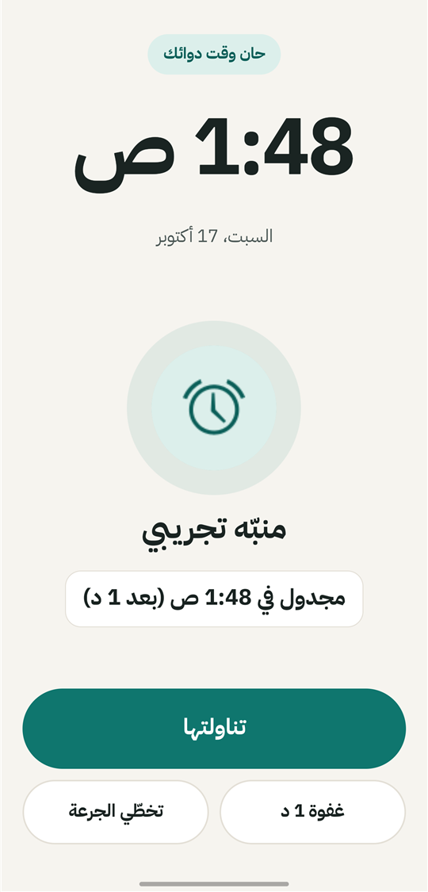
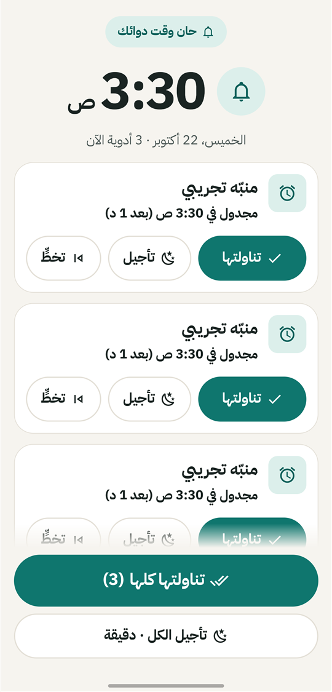
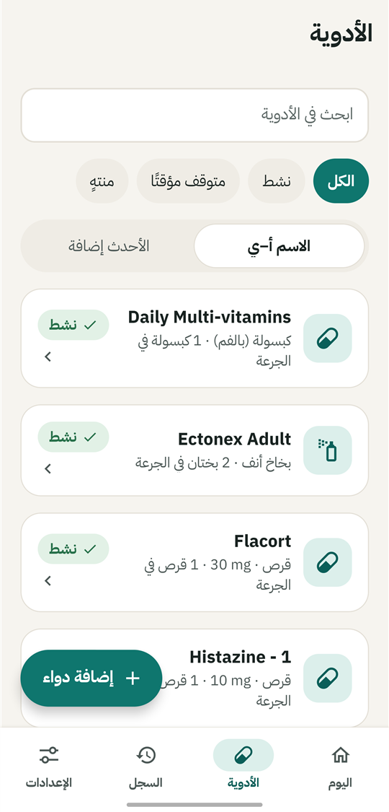
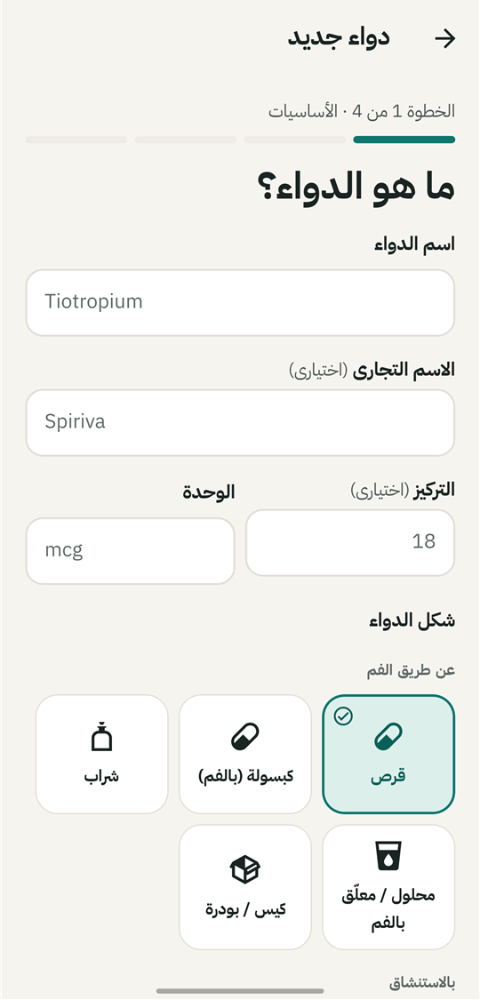
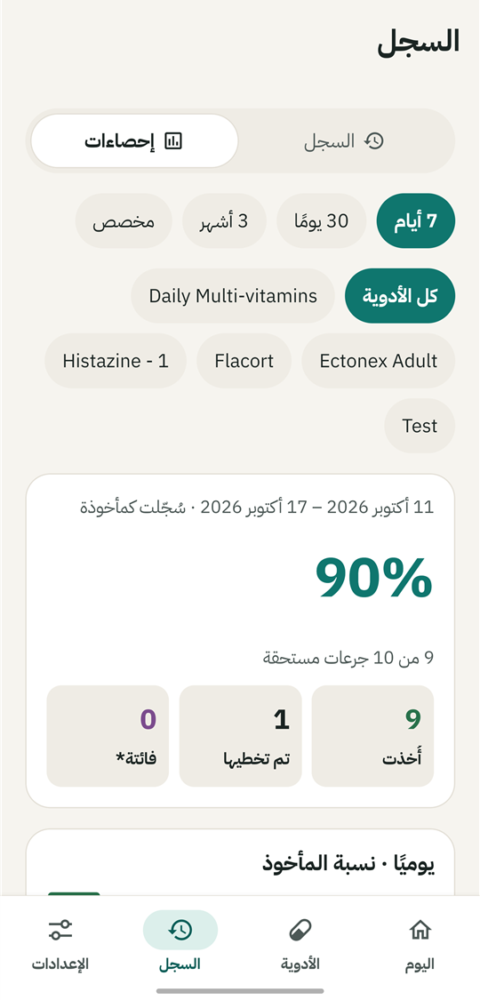
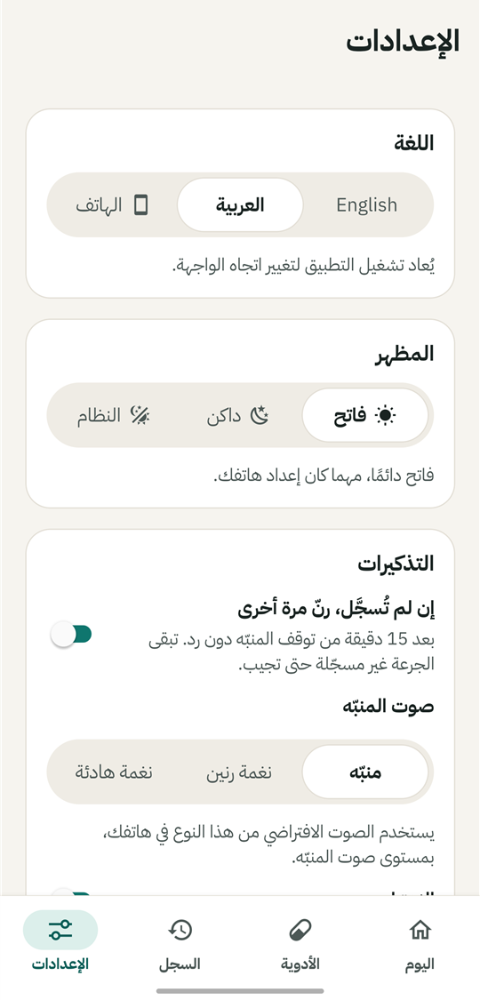

أدويتك في موعدها.
يرنّ «دواء» بمنبّه حقيقي بملء الشاشة لكل جرعة، ويستمر بالرنين حتى تجيب: تناولتها أو غفوة أو تخطّي الجرعة. وتُحفظ كل إجابة في سجل خاص على هاتفك، بالعربية أو الإنجليزية.
- بلا حساب
- بلا سحابة
- بلا إعلانات
- يعمل دون إنترنت
- عربي وإنجليزي
منبّه لا يفوتك
معظم تطبيقات التذكير ترسل إشعاراً يسهل تجاهله. أما «دواء» فيستخدم منبّهاً حقيقياً، ويتذكّر ما فعلت.
يرنّ حتى تجيب
منبّه بملء الشاشة فوق شاشة القفل، وفوق التطبيقات الأخرى إن سمحت بذلك. لمس الشاشة أو فتح لوحة الإشعارات لا يُسكته؛ وحدها «تناولتها» أو «تأجيل» أو «تخطٍّ» تفعل.
يرنّ مهما حدث
منبّهات دقيقة ترنّ رغم وضع السكون وتوفير البطارية وإعادة التشغيل، وتستمر حتى لو لم تفتح التطبيق أياماً. والجرعة التي لم تُجب عنها ترنّ مرة أخرى.
لكل أنواع الأدوية
أقراص وكبسولات وشراب وقطرات وبخاخات وأجهزة استنشاق وحقن وكريمات ولصقات وغيرها، لكلٍّ قواعد جرعته وملاحظات السلامة الخاصة به، تُضاف في أربع خطوات قصيرة.
مواعيد تناسب يومك
كل يوم أو أيام محددة، عدة مرات في اليوم، مع تاريخ بداية ونهاية. أوقف مؤقتاً لبضعة أيام أو نهائياً مع ذكر السبب، دون أن تُحسب تلك الأيام فائتة.
اليوم والسجل
الجرعة التالية وحلقة التقدّم، وسؤال «هل أخذتها؟» للمنبّهات التي لم تُجب، وسجل يومي وإحصاءات. والتجاهل لا يُحسب أبداً تناولاً للجرعة.
العربية والإنجليزية
عربية كاملة من اليمين لليسار مع جمع صحيح (قرص · قرصان · أقراص)، وأرقام غربية لتطابق الجرعة ما على العلبة، ومظهر فاتح وداكن بتباين مدروس حتى شاشة المنبّه.
عدة أدوية معاً
عندما يحين موعد عدة جرعات معاً، تعرضها شاشة منبّه واحدة، لكلٍّ منها «تناولتها» و«تأجيل» و«تخطٍّ»، ومعها «تناولتها كلها» و«تأجيل الكل». ويستمر الرنين حتى تجيب عن كل الجرعات، مع لحظة للتراجع.
جاهز في دقيقة
عند أول تشغيل يرشدك «دواء» إلى أذونات أندرويد القليلة التي يحتاجها المنبّه، وتنبّهك شاشة اليوم إن تعطّل أحدها لاحقاً، كي لا يفشل التذكير بصمت.
نسخ احتياطي وتصدير
صدّر سجلّك جدولاً (CSV) أو انسخ كل شيء احتياطياً في ملف واستعده على هاتف جديد. فقط حين تختار ذلك: لا يُرسل شيء إلى أي مكان.
نظرة أقرب
سبع شاشات من هاتف حقيقي، بالمظهر الفاتح والداكن.






ثبّته في دقيقة
«دواء» غير متاح على Google Play. نزّل ملف APK وثبّته مباشرة.
دواء لأندرويد
أحدث إصدار، جاهز للتثبيت.
نزّل لأندرويد- الإصدار
- الأحدث
- الحجم
- ~37 MB
- يتطلّب
- أندرويد 7.0+
الجديد في الإصدار
SHA-256:
نزّل ملف APK
اضغط «تنزيل» على هاتفك الأندرويد. اسم الملف dawa2.apk.
اسمح بالتثبيت
افتح الملف. إذا طلب أندرويد ذلك، اسمح بتثبيت التطبيقات من المتصفح أو مدير الملفات.
افتح «دواء»
ترشدك شاشة الترحيب إلى ما تحتاجه المنبّهات: الإشعارات والمنبّهات الدقيقة والمنبّه فوق شاشة القفل. أما «المنبّه فوق التطبيقات الأخرى» و«البطارية دون قيود» فاختياريان لكنهما مستحسنان.
قد يحذّرك Google Play Protect من تطبيق غير معروف، وهذا متوقّع لأن «دواء» غير متاح على Google Play. اضغط «مزيد من التفاصيل» ثم «التثبيت على أي حال». الإصدارات الجديدة تُثبَّت فوق القديمة وتحتفظ ببياناتك.
الخصوصية من الأساس
أدويتك شأنك وحدك. ليس لدى «دواء» خوادم يرسلها إليها: كل شيء يبقى على هاتفك.
اقرأ سياسة الخصوصية- بلا حساب ولا تسجيل
- بلا خوادم ولا مزامنة سحابية ولا تحليلات ولا إعلانات
- أدويتك وسجلك يبقيان على هاتفك
- النسخ الاحتياطي والتصدير فقط حين تطلبهما، وإلى حيث ترسلهما فقط
أسئلة شائعة
هل «دواء» مجاني؟
نعم. بلا إعلانات ولا اشتراكات ولا مشتريات داخل التطبيق.
هل يحتاج إلى الإنترنت؟
لا. يعمل «دواء» دون إنترنت بالكامل، ولا يرسل التطبيق نفسه أي طلبات عبر الشبكة.
كيف أنتقل إلى هاتف جديد؟
من الإعدادات › «نسخ احتياطي لكل شيء» احفظ الملف في مكان آمن، ثم استعده على الهاتف الجديد. النسخ الاحتياطي التلقائي في أندرويد معطّل، لذا فحذف التطبيق يحذف بياناتك.
هل يقدّم «دواء» نصائح طبية؟
لا. يسجّل ما تُدخله كما هو، ولا يقترح الجرعات ولا يغيّرها أبداً.
ما الهواتف المدعومة؟
أندرويد 7.0 أو أحدث على هاتف 64-بت (arm64)، وهذا يشمل معظم هواتف السنوات الأخيرة. بعض الشركات تقيّد التطبيقات في الخلفية؛ وتفعيل «البطارية دون قيود» يُبقي المنبّهات في موعدها.
لماذا يظهر المنبّه كإشعار فقط؟
أثناء استخدامك للهاتف، يعرض أندرويد المنبّهات كإشعار ما لم يُسمح للتطبيق بالظهور فوق التطبيقات الأخرى. فعّل «المنبّه فوق التطبيقات الأخرى» من الإعدادات › جاهزية المنبّه، ليظهر المنبّه بملء الشاشة.